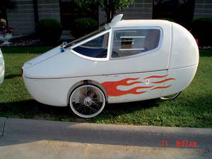

This year, students at Lakewood High School in Lakewood, Colo., are learning about energy policy and alternative sources of power from award-winning teacher Matthew Brown. In November, Brown was named the 2005 Renewable Energy Teacher of the Year by the National Renewable Energy Laboratory (NREL), which recognizes exemplary science teaching in renewable energy. Brown thinks this kind of curriculum will affect future consumers, inventors and policymakers. “Education is the easiest way to create change, and we obviously need to change the way we think about our energy future,” he says. For information about the curriculum, contact NREL’s Office of Education at (303) 275-3660.
Did you know that some human-powered vehicles (HPVs) are designed to reach speeds up to 80 mph, provide cargo space and protect the rider/driver inside? If you’d like to test-drive one of these velomobiles (French for “bicycle cars”), such as the Cab Bike, then consider attending the Velomobile and HPV conference in Cedar Rapids, Iowa, June 9 to 11. The conference also offers workshops on building your own velomobile and a contest for best “practical vehicle.” To learn more, visit www.vine-ave.com.
The American Council for an Energy-Efficient Economy offers an online version of its popular Consumer Guide to Home Energy Savings that will help you save money whether you rent or own. You’ll find great ideas from the quick, easy and cheap, to more complex investments that can result in significant long-term energy and financial savings. Start saving with the Home Energy Checklist for Action. The online guide also helps you take advantage of rebates and tax incentives.
|
 Mark Garvey The Cab Bike velomobile. |
|
|